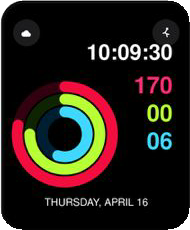
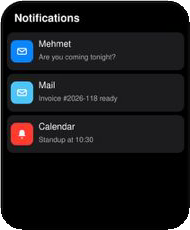
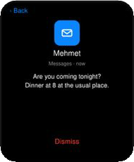
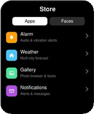
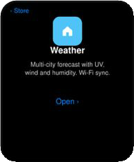

NARRTOS WEAR
Kullanıcı Arayüzü
NARRTOS WEARDökümantasyon Serisi
NARRTOS WEAR
Kullanıcı Arayüzü
Jestler, Control Center, fiziksel butonlar, güç durumları ve yerleşik uygulamalar.


Üç girdi
- Dokunmatik ekrandaki kaydırma jestleri
- İki fiziksel buton
- Hareket sensörüyle algılanan bilek kaldırma
NarRTOS'ta kullanıcı etkileşimi bu üç girdiye dayanır.
Jest (swipe) sistemi
- Saat kadranında sağa kaydırma, uygulama menüsü olan Launcher'ı açar.
- Saat kadranında sola, yukarı ve aşağı kaydırmaya bilinçli olarak işlev atanmamıştır; böylece kazara ekran değişimi önlenir.
- Diğer bütün ekranlarda sağa ya da sola kaydırma geri döner. Tek elle kullanım için iki yön de geri anlamına gelir.
- Üst kenardan (ilk 40 piksel) aşağı çekmek Control Center'ı açar.
- Control Center açıkken yukarı, sağa ya da sola kaydırmak veya karartılmış zemine dokunmak paneli kapatır.
Dokunmatik denetleyici jest verisi göndermez. Kaydırma yazılımda algılanır: parmağın izi takip edilip yön çıkarılır.
Kaydırma kilidi vardır: parlaklık çubuğu gibi sürüklemeye dayalı bileşenler, sürükleme boyunca sayfa geçişini kilitler.
Kadranlar arasında geçiş
Kadranlar arasında yatay kaydırma ile geçilir: analog, dijital, activity ve çıkış kontrolü.
Ana ekrandan uygulamaya
Ana ekranda bir kutucuğa dokunmak uygulamayı açar. Ekranın sahibi her an yalnızca bir uygulamadır.
Control Center ve butonlar
- Control Center, üstten aşağı çekilen hızlı ayarlar panelidir. Aktif uygulamanın üzerine çizilir; uygulama ekranı bozulmaz.
- İçinde WiFi, Bluetooth, uçak modu ve el feneri için hızlı anahtarlar bulunur.
- Üst buton (GPIO 0) cihazı uyandırır ve ana ekrana döndürür. Kısa ve uzun basışlar olay veriyoluyla uygulamaya iletilir.
- Alt buton (GPIO 10) cihazı uyandırır; ayrıca uygulamaya özgü bir işlev üstlenebilir.
Buton basışları olay veriyolu üzerinden iletilir. Uygulama isterse basışa kendi anlamını verir.
Güç durumları ve uyandırma
- ACTIVE durumunda 30 saniye hareketsizlik ekranı kısar (DIM); 5 saniye sonra ekran kapanır (DISPLAY_OFF).
- Ekran kapalıyken 10 dakika hareketsizlik cihazı derin uykuya (DEEP_SLEEP) alır.
- Dokunma, buton ya da bilek kaldırma sayacı sıfırlar ve ekranı açar.
- Derin uykudan uyandırma buton ya da RTC alarmıyla olur.
- Uyandırma kaynakları günlüklerde ayrı ayrı görünür; sahte uyandırmaların teşhisini kolaylaştırır.
power_service dört durumlu bir makine işletir. Her kullanıcı etkileşimi sayacı sıfırlar.
Yerleşik uygulamalar (1/2)
- WatchFace (0) varsayılan ana ekrandır. Saat, tarih, batarya ve adımı gösterir; olaylarla canlı güncellenir.
- StepCounter (1) adım sayardır; verisini sensor_service'in IMU okumalarından alır.
- Settings (2) WiFi (tarama ve klavyeyle şifre girişi), ekran, OTA ve sistem bilgisi sayfalarını içerir.
- Launcher (3) 3×3 ızgaralı uygulama menüsüdür; kadrandan sağa kaydırınca açılır.
- Weather (6) şehir, sıcaklık ve UV, rüzgâr, nem halkalarını gösterir. weather_service kullanır ve WiFi gerektirir.
Her uygulama bir yaşam döngüsü arayüzüyle kaydolur. APP_ID sabitleri os_config.h dosyasındadır.
Yerleşik uygulamalar (2/2)
- Notifications (8) telefon bildirimlerini Bluetooth ve ANCS üzerinden alır; liste, ayrıntı ve kapatma ekranları vardır.
- Gallery (9) cihaz depolamasındaki görselleri gösterir; WiFi üzerinden yükleme sayfası vardır.
- Alarm (10) alarm listesi ve kurma ekranından oluşur; alarm_service ve audio_service kullanır.
- Store (11) uygulama kataloğudur; yalnızca üst veriyle çalışan bir mimarisi vardır.
- HeartRate (5) ve Timer (7) şimdilik iskelet halindedir; gelecekteki uygulamalardır.
Bir uygulama Launcher'a eklenmeden de açılabilir: buton olayı, alarm, başka bir uygulama ya da komut arayüzü tetikleyebilir.
Ekranlar (1/2)
 Analog kadranFACE_ANALOG
Analog kadranFACE_ANALOG Dijital kadranFACE_DIGITAL
Dijital kadranFACE_DIGITAL
Activity kadranıFACE_ACTIVITY Çıkış kontrolüFACE_IO_CONTROL
Çıkış kontrolüFACE_IO_CONTROL Ana ekran3×3 launcher
Ana ekran3×3 launcher Adım sayargünlük hedef halkası
Adım sayargünlük hedef halkası Hava durumuçoklu şehir, canlı veri
Hava durumuçoklu şehir, canlı veri Galerifotoğraf tarayıcı
Galerifotoğraf tarayıcı410×502 AMOLED varyantının ekranları.
Ekranlar (2/2)
 Alarmlarkurma ekranı
Alarmlarkurma ekranı
BildirimlerANCS listesi
Bildirim detayıgövde + kapat
MağazaApps sekmesi
Mağaza detayıuygulama kartı Ayarlarkök menü
Ayarlarkök menü Güç rayları9 toggle + kapat
Güç rayları9 toggle + kapat Yazılım güncellemeOTA akışı
Yazılım güncellemeOTA akışıAyarlar altındaki sayfalar; güç rayları ve OTA akışı da burada.
Güç rayları
Ayarlar içindeki Power Rails sayfası PMIC raylarını çalışma anında tek tek açıp kapatmanızı sağlar. En altta Soft Power Off bulunur.
NARRTOS WEAR
Uygulamalar ekran ölçülerini koda sabit yazmaz.
Ölçü sabitleri kart varyantına göre seçilir. Ayrıntı Uygulama Geliştirme dökümanının Çözünürlük uyumu bölümünde. corezzle.com
İzlediğiniz için teşekkürler
Sıradaki videoSıradaki video
Oynatma listesiOynatma listesi
Abone olunYeni bölümlerden haberdar olun
corezzle.com · github.com/corezzle/NarRTOS-Wear